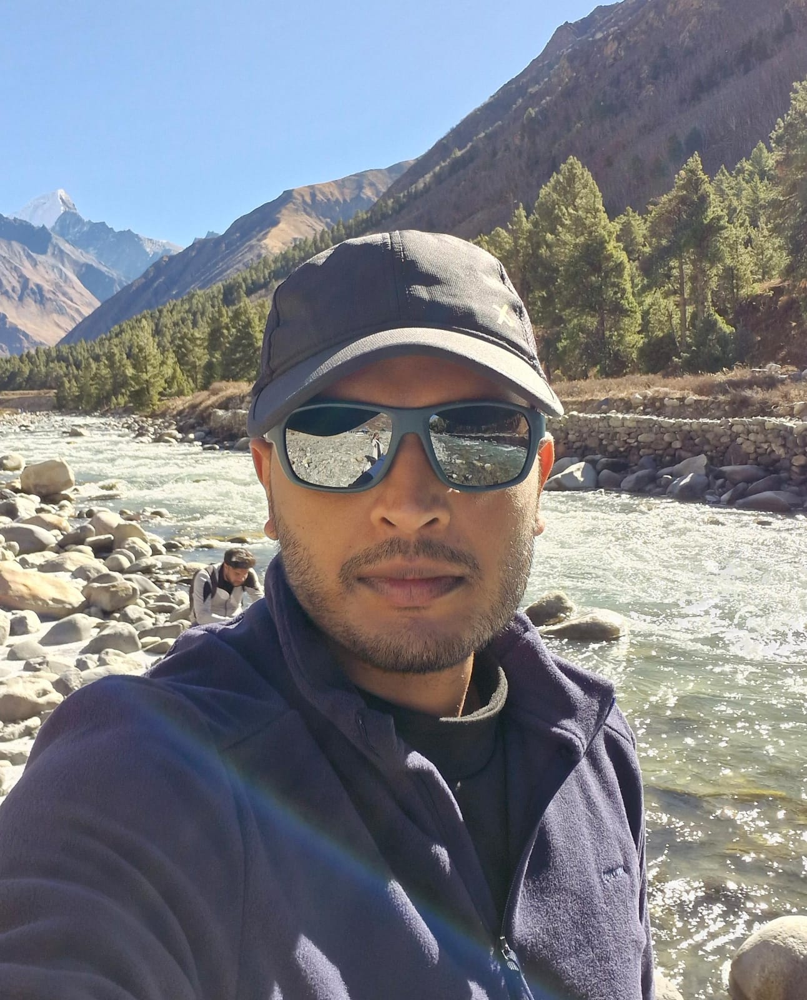

about me
I'm Nimish (/nɪmɪʃ/), a data scientist and a machine learning engineer obsessed with pushing the frontiers of what can be achieved with data.
My journey in technology has been driven by curiosity and a desire to push the boundaries of what's possible with machine learning and artificial intelligence. I specialize in developing production-ready ML models, MLOps infrastructure, and scalable systems that bridge the gap between research and practical applications.
When I'm not coding, you'll find me exploring new technologies, contributing to open source projects, or diving deep into the latest research papers in AI/ML.
interests & philosophy
I believe in the power of technology to solve complex problems and improve lives. My approach combines rigorous technical skills with creative problem-solving, always keeping the end user in mind.
I'm particularly interested in the intersection of AI ethics, model interpretability, and practical deployment challenges. I enjoy mentoring others and sharing knowledge through technical writing and speaking.
Outside of technology, I'm passionate about [your hobbies/interests], which often provide fresh perspectives that I bring back to my technical work.
let's connect
I'm always interested in discussing new opportunities, collaborating on interesting projects, or simply chatting about the latest developments in ML and AI.
Feel free to reach out via email or connect with me on LinkedIn. You can also check out my work on GitHub or read my publications for more insights into my thinking and projects.
Download my full resume/CV for more detailed information about my background and experience.